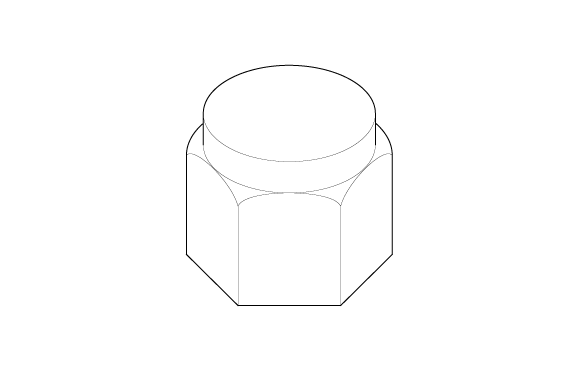
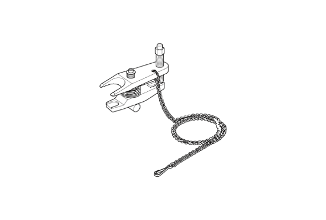
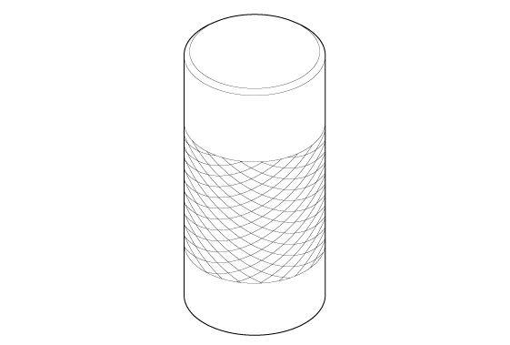

 Courtesy of HONDA, U.S.A., INC.
|
Ball Joint Thread Protector, 12 mm 07AAF-SDAA100 |
 Courtesy of HONDA, U.S.A., INC.
|
Ball Joint Remover, 28 mm 07MAC-SL00202 |
 Courtesy of HONDA, U.S.A., INC.
|
Driver, 32.5 mm 070AD-SAAA100 |